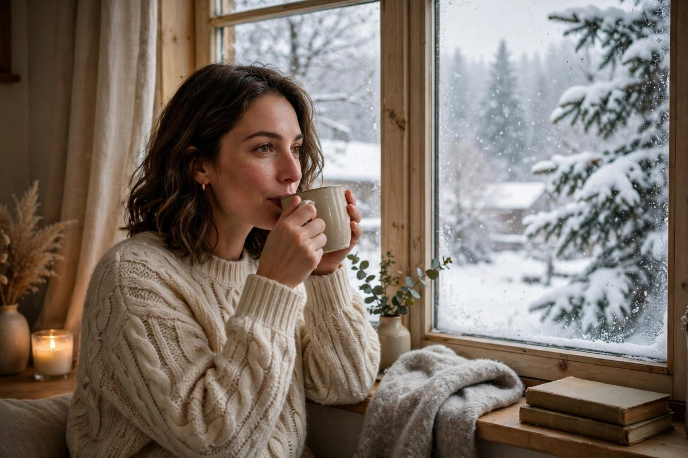

Water Intake in Winter
Why you still need enough water in cold weather, how winter changes your needs, and how to remember to drink when you are not thirsty.
Cold weather makes drinking less appealing: you feel less thirsty, cold water is uninviting, and you spend more time indoors where the air is dry. Yet winter brings its own water losses, from heated indoor air, breathing cold dry air, and winter clothing that makes you sweat. This guide explains why winter hydration matters and how to keep it up when thirst is quiet.
Why winter needs are lower but not zero
Water needs do fall in winter, because you sweat less and the body loses less water through the skin. A target that is right in summer may be 300 to 500 ml too high in winter for a sedentary person. But the need does not disappear: you still lose water through breathing, urine and the dry air of heated rooms, and the base figure of about 30 to 35 ml per kilogram still applies as a starting point. Use the lower end of the range in winter, and adjust for activity as usual.
Why thirst is weaker in cold weather
Cold suppresses the thirst response, partly because blood vessels constrict and the body misreads its fluid balance. You can be mildly dehydrated in winter without feeling thirsty, which is why a schedule matters more than in summer. Older adults are particularly affected, because thirst weakens with age as well. The practical fix is to drink by the clock rather than by thirst: a glass with each meal and one mid-morning and mid-afternoon, as in the hydration schedule.
Dry indoor air
Heated indoor air is very dry, and it pulls moisture from your skin and airways all day. You may notice dry lips, a dry throat, or static in your hair, all signs of dry air rather than dehydration, but the water loss is real. A humidifier helps, and so does drinking regularly. Breathing cold air outdoors also costs water, because the air must be warmed and humidified in the lungs before it reaches the blood, and the moisture is lost when you breathe out.
Warm drinks count
Hot drinks are the easiest way to stay hydrated in winter, and they count towards fluid intake just as cold water does. Tea, herbal tea, and warm water with lemon all count. Coffee counts too, in normal amounts, despite the old idea that it dehydrates you. Soup is particularly good, because it provides water, salts and warmth together. Keep a flask of tea or warm water at your desk, and the habit takes care of itself.
Winter exercise and clothing
Winter exercise still costs water, especially under heavy clothing that traps sweat. Skiing, running in layers, or working outdoors in a heavy coat can all produce surprising sweat losses, and cold air hides it because sweat evaporates quickly or soaks into clothing. Drink before, during and after winter exercise just as you would in summer, and do not wait until you feel thirsty. If your urine is dark despite the cold, you are not drinking enough, whatever the season.
A winter day, planned simply
A winter day needs less water but more reminders. Start with a glass on waking, then a mug of tea with breakfast, a glass with lunch, a mug of tea in the afternoon, and a glass with dinner, for a total of about 1.5 to 2 litres of drinks, plus the water in food. Keep a flask of tea or warm water at your desk, so the drink is warm and within reach. If you exercise outdoors, add a glass before and after, because winter clothing hides sweat. Check your urine colour once a day: pale straw means the plan is working, even though you never felt thirsty. The winter habit is built on routine rather than thirst, and a flask on the desk is the simplest version of it.
Frequently Asked Questions
Do I need less water in winter?
A little less, roughly 300 to 500 ml less for a sedentary person, because you sweat less. The base need of about 30 to 35 ml per kilogram still applies.
Why am I less thirsty in winter?
Cold suppresses the thirst response. You can be mildly dehydrated without feeling thirsty, so drink on a schedule.
Do hot drinks count as water?
Yes. Tea, herbal tea and soup all count towards fluid intake, and soup also replaces salts.